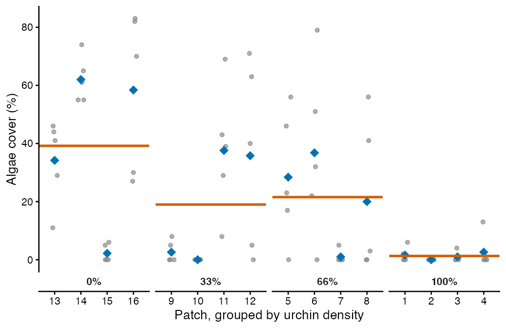
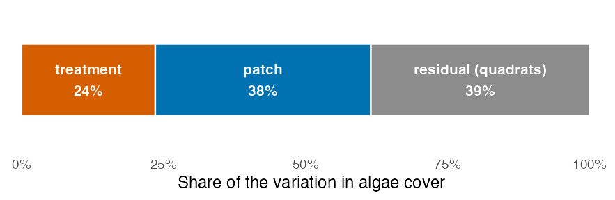
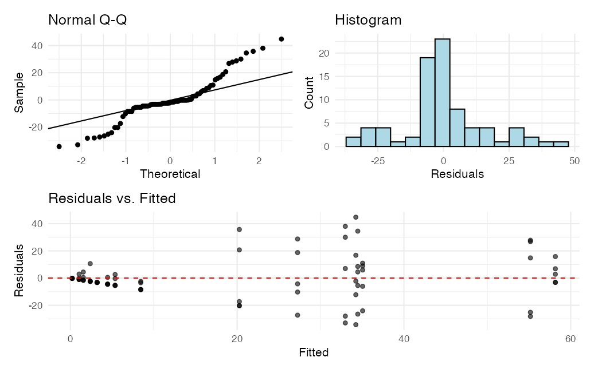
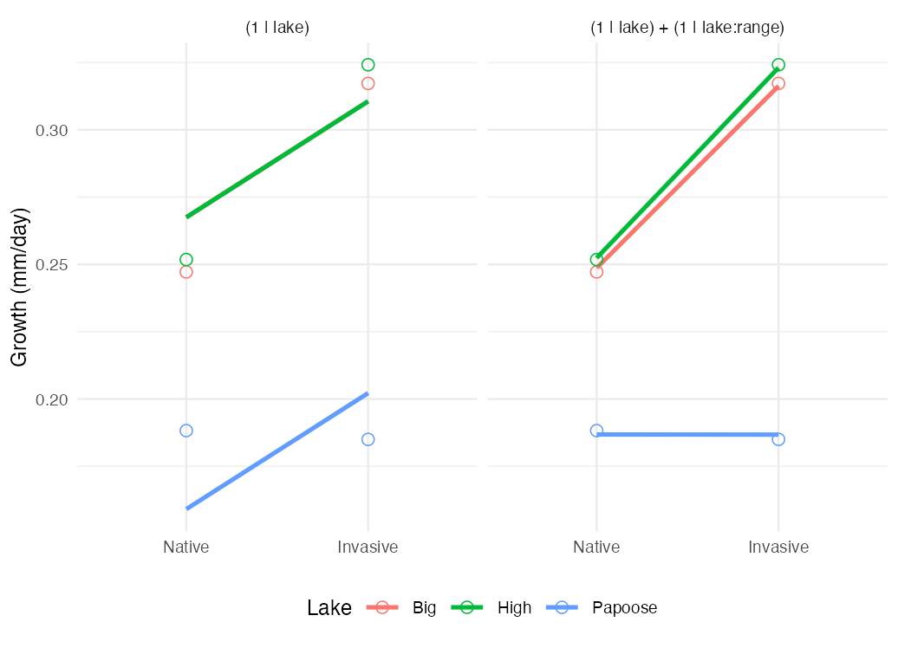
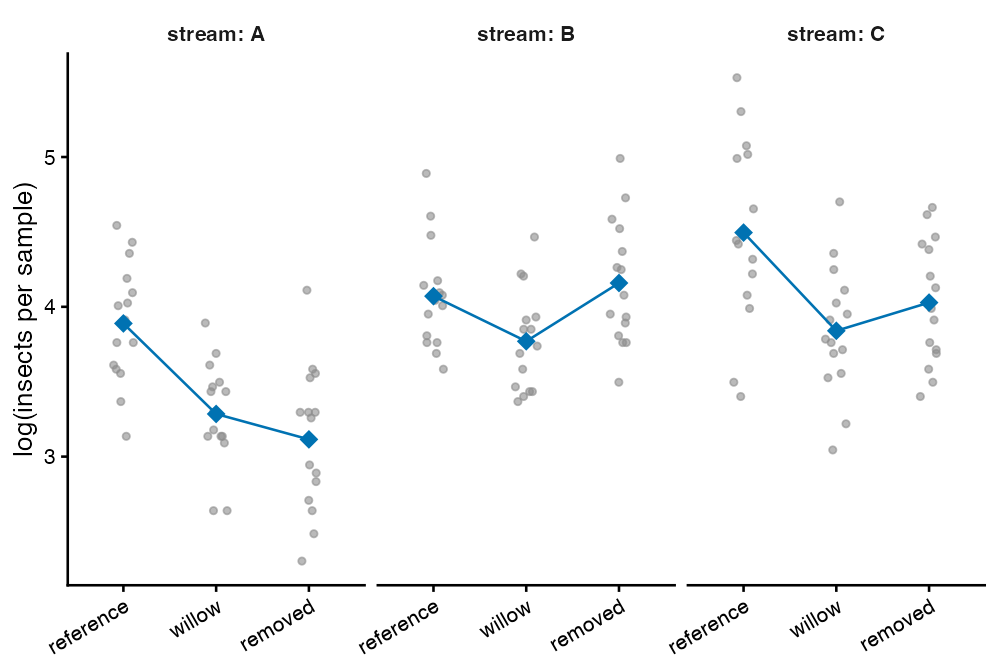

## # A tibble: 4 × 4
## treat n mean sd
## <fct> <dbl> <dbl> <dbl>
## 1 0% 20 39.2 28.7
## 2 33% 20 19 25.7
## 3 66% 20 21.6 25.1
## 4 100% 20 1.3 3.2Lecture: Linear Mixed Models
Random effects for nested and hierarchical data
ANOVA
Mixed Models
Why quadrats inside a patch are not independent replicates, and how a linear mixed model (lmer) handles it: fitting a random intercept, reading the random-effects output, the ICC and what it means for designing the next experiment, testing the treatment with the right df, and reporting both halves of the result. All on the sea urchin grazing / algae cover data. Then the crayfish with lake fixed vs random and a random slope, chick growth through time, and a simulated stream experiment blocked by stream. The REML and p-value theory lives in the Mixed Models Under the Hood vignette.
Where We Left Off
Last week: generalized linear models. We changed the distribution of the response (Poisson, binomial).
This week we change something else: which observations are allowed to count as independent.
Today’s plan:
- Why quadrats in a patch are not independent replicates
- Fit a mixed model and read its output
- The ICC: how much of the variation is among patches
- Test, check and report the result
- The same ideas on the crayfish, chicks and streams
Note
✅ Two words to keep straight all lecture
R prints two variances. We will call them by R’s names every time:
- patch variance: how much patches differ from each other (among-patch)
- residual variance: how much quadrats differ inside one patch (within-patch)
Tip
🖐 Want the theory?
How REML finds those variances, and where the p-values come from, is in the Mixed Models Under the Hood vignette. Optional.
Part 1 · Why a One-Way ANOVA Fails These Data
The Data and the Design
treat: urchin density (0 / 33 / 66 / 100% of natural) patch: 16 patches of reef, 4 per treatment quad: 5 quadrats scored inside every patch algae: % cover of filamentous algae, the response
The design is nested: treatment → patch → quadrat. Patch 7 is in one treatment only.
Tip
🖐 The giveaway question
“What did I apply the treatment to?”
The urchin density was set for a whole patch. So count patches: 16, not 80 quadrats.
Important
⚠️ So what is n?
The 5 quadrats in a patch are subsamples of that patch, not 5 replicates of the treatment.
Treating all 80 quadrats as independent replicates is pseudoreplication (Hurlbert 1984), the most common fatal flaw in ecological statistics.
Three Levels in One Picture

Every quadrat’s algae cover is three things added together:
- its treatment mean: the orange line
- how far its patch sits from that line: orange line to blue diamond. The spread of these is the patch variance.
- how far the quadrat sits from its patch: blue diamond to grey dot. The spread of these is the residual variance.
Important
That sentence is the whole model
The treatment was applied to patches, so the treatment has to beat piece 2, patch-to-patch scatter, not piece 3.
Keep this picture in mind. We come back to it when we read the output.
Pseudoreplication, Priced
Same 80 numbers, two analyses:
# ignores patch: 80 quadrats treated as replicates
anova(lm(algae ~ treat, data = u_df))
# tests treatment against patches (the 1960s way)
aov(algae ~ treat + Error(patch), data = u_df)## analysis F den_df p
## 1 Ignore patch 9.06 76 0.00003
## 2 Test against patches 2.72 12 0.091
Important
Same data: p = 0.00003 or p = 0.091
Ignoring patch uses 76 denominator df, as if there were 80 independent replicates. Testing against patches uses 12: 16 patches minus 4 treatments.
Note
📖 What pseudoreplication does
Both analyses see the same big difference in the treatment means (39% vs 1%). Pseudoreplication does not invent the effect. It invents certainty.
The Error(patch) trick works, but only on balanced designs, and it tells you nothing about the patches themselves. That is what the mixed model replaces.
What If Urchins Did Nothing at All?

1000 made-up reefs, laid out like the real one: 4 treatments, 4 patches each, 5 quadrats each, with the same patch and quadrat scatter. The treatment does nothing in any of them.
A fair test should cry wolf 5% of the time.
Important
Ignoring patch cries wolf about half the time
Each treatment mean is an average of only 4 patches, and patches differ a lot. So even with no effect, the four means differ. Judge that against quadrat noise and it looks far too big to be chance.
The mixed model on the right is what we build next.
Part 2 · The Mixed Model and Its Output
What Makes an Effect “Random”?
Ask one question: do I care about these specific levels, or are they a sample of levels I could have had?
treat |
patch |
|
|---|---|---|
| The levels are | 0/33/66/100% density | patches 1–16 |
| Chosen by | me, deliberately | whatever was there |
| Would a repeat study use the same ones? | yes | no, different patches |
| I want to estimate | each level’s mean | how much they vary |
| So it is | fixed | random |
Important
The key consequence
A random factor with 16 levels costs one number, the patch variance, not 16 separate patch means.
Note
📖 A useful test
“The 100% density treatment reduced algae”: a reader cares about that level. Fixed.
“Patch 7 happened to be lush”: nobody cares about patch 7 in particular. Random.
Warning
⚠️ You need enough levels
A variance estimated from fewer than ~5 levels is unreliable. With 2 or 3 groups, fit them as fixed instead.
We have 16 patches, which is plenty. The crayfish (3 lakes) and streams (3 streams) later show what too few costs.
Fitting It
u_lmer_model <- lmer(
algae ~ treat + (1 | patch),
data = u_df,
control = lmerControl(calc.derivs = FALSE))Read the formula as:
algae ~ treat + (1 | patch)
↑ ↑ ↑
response fixed effect random effect(1 | patch): the 1 is the intercept. Each patch gets its own baseline algae cover. This is a random intercept.
calc.derivs = FALSE just skips a noisy convergence check. It does not change the fit.
The model in symbols, then in words:
\[algae_{ijk} = \mu + \alpha_i + b_{j(i)} + \epsilon_{ijk}\]
- \(\mu + \alpha_i\): the treatment mean (orange line)
- \(b_{j(i)}\): how far patch j sits from its own treatment’s mean (orange to blue). Their spread is the patch variance.
- \(\epsilon_{ijk}\): how far quadrat k sits from its own patch’s mean (blue to grey). Their spread is the residual variance.
Warning
⚠️ Patch IDs must be unique
Our patches are numbered 1–16, so (1 | patch) knows patch 7 is one place. If they were numbered 1–4 inside every treatment, R would think “patch 1” was the same place in all four. Then write (1 | treat:patch), which is always safe.
Reading the Output
summary(u_lmer_model)
## Linear mixed model fit by REML. t-tests use Satterthwaite's method [
## lmerModLmerTest]
## Formula: algae ~ treat + (1 | patch)
## Data: u_df
## Control: lmerControl(calc.derivs = FALSE)
##
## REML criterion at convergence: 684.9
##
## Scaled residuals:
## Min 1Q Median 3Q Max
## -1.9808 -0.3106 -0.1093 0.2831 2.5910
##
## Random effects:
## Groups Name Variance Std.Dev.
## patch (Intercept) 294.3 17.16
## Residual 298.6 17.28
## Number of obs: 80, groups: patch, 16
##
## Fixed effects:
## Estimate Std. Error df t value Pr(>|t|)
## (Intercept) 20.263 4.704 12.000 4.308 0.00102 **
## treat1 18.938 8.147 12.000 2.324 0.03846 *
## treat2 -1.262 8.147 12.000 -0.155 0.87943
## treat3 1.287 8.147 12.000 0.158 0.87707
## ---
## Signif. codes: 0 '***' 0.001 '**' 0.01 '*' 0.05 '.' 0.1 ' ' 1
##
## Correlation of Fixed Effects:
## (Intr) treat1 treat2
## treat1 0.000
## treat2 0.000 -0.333
## treat3 0.000 -0.333 -0.333Random effects: the new block, two rows:
patch (Intercept)294.3: the patch variance. How far patches sit from their own treatment’s mean, pooled over all four treatments.Residual298.6: the residual variance. How far quadrats sit from their own patch’s mean.
groups: patch, 16: R knows there are 16 patches. That is the replication for treat.
Fixed effects: skip this table. treat1, treat2 and so on are deviations from the grand mean, which is confusing. Get treatment means from emmeans() instead (Part 4).
Important
Back to the picture
Orange line → blue diamond: 294. Blue diamond → grey dot: 299.
About equal. Patches differ as much as quadrats do.
Part 3 · The ICC: How Much Do Patches Matter?
The ICC: Two Extremes
\[ICC = \frac{\text{patch variance}}{\text{patch variance} + \text{residual variance}}\]
The share of the variation that is among patches. It asks: if I pick two quadrats from the same patch, how alike are they?
ICC near 0: patches don’t matter (made-up numbers, same treatment)
| Quadrats | Patch mean | |
|---|---|---|
| Patch A | 10, 30, 5, 25, 20 | 18 |
| Patch B | 22, 8, 28, 12, 20 | 18 |
The patch means are the same. All the variation is quadrat to quadrat. Knowing the patch tells you nothing, so the quadrats act like independent replicates.
ICC near 1: patch is everything
| Quadrats | Patch mean | |
|---|---|---|
| Patch A | 5, 6, 5, 4, 5 | 5 |
| Patch B | 40, 41, 39, 40, 40 | 40 |
Quadrats inside a patch are nearly identical. You measured the same number 5 times, so each patch is really one data point.
Tip
🖐 Where real data sit
Somewhere in between. The closer to 1, the less each extra quadrat tells you, and the more it matters that patches, not quadrats, are the replicates.
The ICC on the Real Reef
The 4 patches with urchins removed (0%), all given the same treatment:
| Patch | Quadrats | Patch mean |
|---|---|---|
| 13 | 46, 44, 41, 29, 11 | 34 |
| 14 | 65, 55, 61, 74, 55 | 62 |
| 15 | 0, 5, 0, 0, 6 | 2 |
| 16 | 30, 82, 70, 27, 83 | 58 |
- Among patches, big: same treatment, but patch 15 is nearly bare while patch 14 is at 62%. That’s the patch variance.
- Within patches, also big: patch 16 runs from 27 to 83. That’s the residual variance.
icc(u_lmer_model)
## # Intraclass Correlation Coefficient
##
## Adjusted ICC: 0.496
## Unadjusted ICC: 0.379294 / (294 + 299) = 0.50. Report the adjusted ICC. (The unadjusted one also counts treatment differences in the denominator.)
Important
ICC = 0.50: half the differences in algae cover come from which patch a quadrat was in
So quadrats from one patch are not independent. One bare patch like 15 drags down the whole 0% mean, and only more patches can average that out. Five more quadrats in patch 15 would just confirm it’s bare.
R²: How Much Does Each Part Explain?
r2(u_lmer_model)
## # R2 for Mixed Models
##
## Conditional R2: 0.615
## Marginal R2: 0.236A mixed model explains variation in two ways, so it gets two R² values (Nakagawa & Schielzeth 2013):
- Marginal R²: the fixed effects only (
treat) - Conditional R²: fixed and random effects (
treat+patch)

Important
24% treatment, 38% patch, 39% left over
- Treatment explains about 24% of the variation in algae cover (marginal R²).
- Add which patch a quadrat was in and it’s 62% (conditional R²).
- The gap, 62 − 24 = 38%, is the patch part. That is the unadjusted ICC that
icc()printed.
Patches explain more of the variation than the treatment does.
Warning
⚠️ Report both, and say which is which
“R² = 0.62” on its own overstates what the treatment did. R² is a description, not a test: the F-test is still the test.
The adjusted ICC (0.50) is different again: the patch share of the variation left after treatment.
Use It to Price the Next Experiment
The two variances give the standard error of a treatment mean for any design, before you get wet:
\[SE = \sqrt{\frac{\text{patch var}}{\text{patches}} + \frac{\text{residual var}}{\text{patches} \times \text{quadrats}}}\]
vc <- as.data.frame(VarCorr(u_lmer_model))
var_patch <- vc$vcov[vc$grp == "patch"]
var_resid <- vc$vcov[vc$grp == "Residual"]
se_mean <- function(patches, quads) {
sqrt(var_patch / patches + var_resid / (patches * quads))
}
round(c(done_4x5 = se_mean(4, 5),
quads_4x20 = se_mean(4, 20),
patch_8x5 = se_mean(8, 5)), 2)
## done_4x5 quads_4x20 patch_8x5
## 9.41 8.79 6.65
Important
More quadrats: 9.41 → 8.79. More patches: 9.41 → 6.65.
Four times the quadrat work buys almost nothing. Twice the patches, with half that work, buys a lot. With 4 patches the SE can never get below √(294.3 / 4) = 8.58, however many quadrats you count.
Note
📖 This is what p = 0.091 means
The experiment was not short of data. It was short of patches. The p-value alone could never have told you that. The variance components can.
Partial Pooling: What Happens to Each Patch
The random effect also changes each patch’s estimate.

Note
📖 New word: shrinkage
Every patch estimate is pulled part of the way toward its treatment mean. The model treats an extreme patch average as partly real and partly luck.
How far it pulls comes from the same two variances: big patch variance → trust each patch more; big residual variance → trust it less.
Tip
🖐 Why this is a feature
A patch whose 5 quadrats landed high is probably not quite that extreme. The next 5 would come back closer to average.
This is partial pooling, between “every patch is unrelated” and “all patches are identical”. Simulations with the true answer visible are in the Under the Hood vignette.
Part 4 · Testing, Checking and Reporting
Testing the Treatment: Two Tests, Two Answers
Anova(u_lmer_model, type = 3,
test.statistic = "F")
## Analysis of Deviance Table (Type III Wald F tests with Kenward-Roger df)
##
## Response: algae
## F Df Df.res Pr(>F)
## (Intercept) 18.5551 1 12 0.001018 **
## treat 2.7171 3 12 0.091262 .
## ---
## Signif. codes: 0 '***' 0.001 '**' 0.01 '*' 0.05 '.' 0.1 ' ' 1Anova(u_lmer_model, type = 3,
test.statistic = "Chisq")
## Analysis of Deviance Table (Type III Wald chisquare tests)
##
## Response: algae
## Chisq Df Pr(>Chisq)
## (Intercept) 18.5551 1 0.00001651 ***
## treat 8.1513 3 0.04299 *
## ---
## Signif. codes: 0 '***' 0.001 '**' 0.01 '*' 0.05 '.' 0.1 ' ' 1| Test | Statistic | p | at α = 0.05 |
|---|---|---|---|
| F, Kenward-Roger df | F3,12 = 2.72 | 0.091 | not significant |
| Wald χ² | χ²3 = 8.15 | 0.043 | significant |
Report the F-test. Denominator df = 12 (16 patches − 4 treatments): it counts patches, just like Error(patch) did, and gives the identical p.
The χ² assumes you have infinite replicates and that the two variances are known exactly. With 16 patches, it is over-confident.
Warning
🖐 The uncomfortable part
Run only the χ² and you would report a significant effect and never know. With few groups, which is nearly always in ecology, use the F-test and say which df method you used.
Treatment Means and Post-Hoc Comparisons
u_emm <- emmeans(u_lmer_model, ~ treat)
multcomp::cld(u_emm, Letters = letters)
## treat emmean SE df lower.CL upper.CL .group
## 100% 1.3 9.41 12 -19.20 21.8 a
## 33% 19.0 9.41 12 -1.50 39.5 a
## 66% 21.6 9.41 12 1.05 42.0 a
## 0% 39.2 9.41 12 18.70 59.7 a
##
## Degrees-of-freedom method: kenward-roger
## Confidence level used: 0.95
## P value adjustment: tukey method for comparing a family of 4 estimates
## significance level used: alpha = 0.05
## NOTE: If two or more means share the same grouping symbol,
## then we cannot show them to be different.
## But we also did not show them to be the same.Every SE is 9.41, on 12 df: it comes from the patches (4 per treatment), not the 20 quadrats.
Important
Every treatment shares the letter a
No pair is clearly different. That’s expected: the overall F-test was not significant (p = 0.091). Post-hocs after a non-significant test are exploratory only.
Warning
⚠️ Two intervals go below zero
Algae cover can’t be negative. The mixed model fixed the error structure but still assumes a normal response. Last week fixed the distribution. Real data often need both: glmer(), next.
Diagnostics 1: Look With check_model()
check_model(u_lmer_model,
check = c("qq", "reqq", "homogeneity"))
The same call as every model this term, with one new panel.
Note
📖 reqq is the new one
A mixed model assumes two things are normal: the residuals and the random effects. reqq is a Q-Q plot of the 16 patch intercepts.
They look fine, but it’s only 16 points, so it can’t support a strong claim either way.
Warning
⚠️ Skip the old residual tests here
check_normality(), check_heteroscedasticity() and leveneTest() all assume independent observations. On a mixed model they use the wrong yardstick and shout p < 0.001. Use the plots to look, and DHARMa (next) to decide.
Diagnostics 2: Decide With DHARMa
set.seed(42)
sim <- simulateResiduals(u_lmer_model, n = 1000)
plot(sim)
DHARMa simulates new data from your fitted model and checks the real data against them. So the yardstick already includes the patches. The same check works for lmer, glmer, Poisson and negative binomial.
## test p
## 1 uniformity (QQ) 0.022
## 2 dispersion 0.644
## 3 outliers 1.000
## 4 uniformity, by patch 0.092
Important
The honest summary
A mild departure from the expected distribution (percent cover with lots of zeros), no dispersion problem, no outliers, and nothing wrong at the level of the 16 patches.
Variances are also unequal across treatments (SD 3 at 100%, 29 at 0%). Quinn & Keough found no transformation fixed it, analysed the raw data and said so. Do the same.
The Figure: Both Levels of Variation

Grey: the 16 patch means. Red: the model’s treatment means and 95% intervals.
Tip
🖐 Read it as the model
- The gap between red points is the treatment effect: big.
- The grey scatter within each treatment is the patch variance: also big.
- The treatment has to beat the grey scatter, and with 4 patches per treatment it can’t quite.
Reporting the Result
Note
How to report this result
“Algal cover did not differ significantly among urchin density treatments (linear mixed model with patch as a random intercept, F3,12 = 2.72, p = 0.091, Kenward-Roger df), although cover was much higher where urchins were removed (39%) than at natural density (1%). Patches varied as much as quadrats within patches (patch variance 294, residual variance 299, ICC = 0.50). Treatment explained 24% of the variation in cover, and treatment plus patch 62% (marginal R² = 0.24, conditional R² = 0.62).”
Both halves belong in the sentence. The F-test answers did the treatment do anything. The variance components answer how variable is this reef, which is what the next person planning a study needs.
Important
⚠️ “Not significant” is not “no effect”
The effect is large. The design had only 4 patches per treatment against a lot of patch-to-patch variation.
The honest conclusion is “this design could not detect it, and more patches would”, not “urchins do not affect algae.”
Under the Hood (Optional)
Nested ANOVA, aov(Error()) |
Mixed model, lmer() |
|
|---|---|---|
| How it gets the variances | splits sums of squares, solves for the variances | REML: searches for the variances that make the data most likely |
| Patch variance here | 294.3 | 294.3 |
F-test for treat |
F3,12 = 2.72, p = 0.091 | F3,12 = 2.72, p = 0.091 |
| Needs a balanced design? | yes | no |
| A variance can come out negative? | yes, which is meaningless | no, stops at 0 with a “singular fit” warning |
| Reports the variances and ICC? | no | yes |
Note
✅ The one sentence
On a balanced design like this one the two methods agree exactly. When patches have different numbers of quadrats, or there is more than one grouping, only the mixed model still works. That is why it replaced Error().
The full story (the sums-of-squares table, the patch variance by hand, REML written out, why lme4 prints no p-values, and the bootstrap) is in Mixed Models Under the Hood.
Part 5 · The Same Factor, Fixed or Random: the Crayfish
Back to the Crayfish
Sargent & Lodge (2014). Young rusty crayfish from the Native (Ohio) and Invasive (Wisconsin) range, grown in enclosures in three Wisconsin lakes. Response: growth_per_day (mm/day).
In the factorial weeks lake was fixed:
Anova(cray_fixed, type = 3)[2:4, ]
## Anova Table (Type III tests)
##
## Response: growth_per_day
## Sum Sq Df F value Pr(>F)
## range 0.036529 1 37.695 0.00000003234 ***
## lake 0.174110 2 89.835 < 0.00000000000000022 ***
## range:lake 0.024623 2 12.704 0.00001674553 ***
## ---
## Signif. codes: 0 '***' 0.001 '**' 0.01 '*' 0.05 '.' 0.1 ' ' 1## # A tibble: 3 × 4
## lake Native Invasive advantage
## <fct> <dbl> <dbl> <dbl>
## 1 Big 0.247 0.317 0.07
## 2 High 0.252 0.324 0.072
## 3 Papoose 0.188 0.185 -0.003
Important
The result you already know
Invasive crayfish grew about 0.07 mm/day faster in Big and High, and not at all faster in Papoose. The interaction is the finding: the advantage is real in two lakes and absent in the third.
Today’s question: what happens when lake becomes random?
Fixed Lake or Random Lake? Two Different Questions
lake fixed |
lake random |
|
|---|---|---|
| The question | do Big, High, Papoose differ? | how much do lakes vary? |
| What R estimates | a mean for each lake | one lake variance |
| Post-hoc | Tukey: Big vs Papoose, etc. | none, no levels to compare |
| Conclusions are about | these three lakes | lakes in general |
Neither is “the correct model”. Pick the one that matches the sentence you want to write in the Discussion.
Tip
🖐 Which did the authors mean?
Sargent & Lodge did not care whether Big Lake differs from High Lake. They wanted to know whether the invasive advantage holds in Wisconsin lakes generally. That is a random-effect question.
The catch: they only had three lakes. Keep that number in view.
What the Random-Lake Model Says
cray_ri <- lmer(
growth_per_day ~ range + (1 | lake),
data = cray_df)
print(VarCorr(cray_ri),
comp = c("Variance", "Std.Dev."))
## Groups Name Variance Std.Dev.
## lake (Intercept) 0.0039631 0.062953
## Residual 0.0012526 0.035392
icc(cray_ri)
## # Intraclass Correlation Coefficient
##
## Adjusted ICC: 0.760
## Unadjusted ICC: 0.702
emmeans(cray_ri, pairwise ~ range)$contrasts
## contrast estimate SE df t.ratio p.value
## Native - Invasive -0.0431 0.0082 80.1 -5.257 <0.0001
##
## Degrees-of-freedom method: kenward-rogerRead it exactly like the urchins:
lake (Intercept): the lake variance. Lakes typically sit ±0.063 mm/day from the average lake.Residual: the residual variance. Crayfish within a lake scatter ±0.035 mm/day.- ICC = 0.76: three-quarters of the variation is between lakes.
- Invasive − Native = 0.043 mm/day, on 80 df.
Warning
⚠️ Notice the 80 df
range varies within every lake, so this model counts every crayfish as a replicate of the invasive advantage. Is that right? Next slides.
Three Models, One Row Each
a_int <- Anova(cray_fixed, type = 3)["range", ]
a_add <- Anova(cray_add, type = 3)["range", ]
a_ri <- Anova(cray_ri, type = 3,
test.statistic = "F")["range", ]
tibble(
model = c("range * lake, fixed",
"range + lake, fixed",
"range + (1 | lake)"),
F = c(a_int$`F value`, a_add$`F value`, a_ri$F),
df2 = c(df.residual(cray_fixed),
df.residual(cray_add), a_ri$Df.res),
p = c(a_int$`Pr(>F)`, a_add$`Pr(>F)`,
a_ri$`Pr(>F)`))
## # A tibble: 3 × 4
## model F df2 p
## <chr> <dbl> <dbl> <dbl>
## 1 range * lake, fixed 37.7 78 0.0000000323
## 2 range + lake, fixed 27.6 80 0.00000120
## 3 range + (1 | lake) 27.6 80.1 0.00000119
Important
The random intercept changed nothing about range
The additive fixed model and the random-intercept model give the same test: F = 27.6 on 1 and 80 df. Making lake random changed how lake is reported (one variance, not two means), not the p-value.
Warning
⚠️ And it quietly dropped the interaction
The random-intercept model is the additive model. It assumes the invasive advantage is the same in every lake.
The factorial weeks showed that is false: Papoose disagrees.
Where Did the Interaction Go?

Open circles are the observed means. The left model can only move each lake up or down, so it can’t reach Papoose’s two points.
Important
(1 | lake) = parallel lines
A random intercept gives every lake its own baseline and nothing else. That is exactly “no interaction”.
Warning
⚠️ Pseudoreplication, in a new costume
What we want to generalise is the invasive advantage in a lake. That was observed three times, once per lake. Yet the random-intercept model tests it on 80 df, as if every crayfish were a separate lake.
A Random Slope: Each Lake Gets Its Own Advantage
cray_rs <- lmer(
growth_per_day ~ range +
(1 | lake) + (1 | lake:range),
data = cray_df)
VarCorr(cray_rs)
## Groups Name Std.Dev.
## lake:range (Intercept) 0.029600
## lake (Intercept) 0.053219
## Residual 0.031118
Anova(cray_rs, type = 3,
test.statistic = "F")["range", ]
## Analysis of Deviance Table (Type III Wald F tests with Kenward-Roger df)
##
## Response: growth_per_day
## F Df Df.res Pr(>F)
## range 3.3061 1 1.9963 0.2109(1 | lake:range) gives each lake its own range effect: a random slope. It’s the right-hand panel of the last slide.
lake:rangeSD 0.030: how much the invasive advantage changes from lake to lake. The interaction, as a variance.- F1,2 = 3.3, p = 0.21. The advantage is still about 0.046, but it is now tested on 2 df (3 lakes − 1), not 80.
Important
The yardstick changed
range is now tested against lake-to-lake disagreement about the advantage. One lake in three disagrees, so we can’t say the advantage holds in lakes generally.
You may also see this written (1 + range | lake). Same idea, one extra parameter. See Mixed Model Structures.
Which Analysis Is Right? Whichever Matches the Question
| Model | range p |
What you may write in the Discussion |
|---|---|---|
range * lake, all fixed |
< 0.0001, but the interaction rules | “In Big and High Lake invasive crayfish grew ~0.07 mm/day faster; in Papoose they did not.” Strong, specific, true, about these three lakes. |
range + (1 | lake) |
0.000001 | “Invasive crayfish grow faster in lakes generally.” Only by assuming the advantage is the same in every lake, which the data contradict. Do not write this. |
range + (1 | lake) + (1 | lake:range) |
0.21 | “Across lakes generally, we cannot say the advantage holds: it appeared in two of three lakes.” Honest but weak, because three lakes is three replicates. |
Important
The mixed model’s advantage is not a smaller p
It makes you say what you are generalising to, and then counts the right replicates for that claim.
Warning
⚠️ Three lakes is too few for a variance
confint(cray_ri) puts the lake SD between 0.027 and 0.152, a six-fold range. With 16 patches the random effect was the right tool. With 3 lakes, report the fixed model and say the general claim rests on three lakes.
Part 5: The Short Version
- A fixed factor gives you its levels. A random factor gives you a variance. Choose by the question.
(1 | g)means parallel lines: it assumes the treatment effect is the same in every group, and tests it on within-group df.- A random slope,
(1 | g) + (1 | g:x), lets the effect differ by group. It tests the treatment on group df. - Below ~5 groups, fit the factor as fixed.
Note
📖 In one sentence
The mixed model did not change the crayfish result. It changed who the result is about, and showed that the general claim rests on three lakes, two of which agree.
Part 6 · Two Designs You Will Actually Run
Animals Followed Through Time: Chick Growth

ChickWeight ships with R: 50 chicks on 4 diets, each weighed up to 12 times over 21 days, 578 weighings.
The same structure as the urchins:
| Urchins | Chicks |
|---|---|
| treatment → patch | diet → chick |
| 5 quadrats per patch | 12 weighings per chick |
| 16 patches | 50 chicks |
The diet was given to the chick. Twelve weighings of one chick are not twelve chicks.
Note
📖 What is new
Each chick has its own line: its own starting weight and its own growth rate. The lines fan out. So we need a random intercept and a random slope for time:
(1 + time | chick)
Each Chick Gets Its Own Growth Line
The question is time:diet: do chicks grow at different rates on different diets?
ck_lm <- lm(weight ~ time * diet, data = ck_df)
ck_ri <- lmer(weight ~ time * diet + (1 | chick),
data = ck_df)
ck_rs <- lmer(weight ~ time * diet + (1 + time | chick),
data = ck_df)## model F_value den_df
## 1 lm, no chick 23.2 570
## 2 (1 | chick) 43.5 527
## 3 (1 + time | chick) 5.7 46
Important
570 → 527 → 46 denominator df
Only the last model knows there are 50 chicks. Growth rate belongs to a chick, so it has to be tested against chick-to-chick differences in growth rate. Diet still matters (p = 0.002), on honest df.
Warning
⚠️ The random intercept alone made it worse
(1 | chick) gave the largest F. It still assumes every chick on a diet grows at the same rate.
If a predictor’s effect can differ among your animals, it needs the random slope.
Tip
🖐 How to choose
Plot one line per animal. Parallel → random intercept. Fanning or crossing → random slope.
What the Chick Model Says
VarCorr(ck_rs)
## Groups Name Std.Dev. Corr
## chick (Intercept) 10.8124
## time 3.3048 -0.975
## Residual 12.7817
emtrends(ck_rs, ~ diet, var = "time") %>%
as.data.frame() %>%
dplyr::select(diet, time.trend, SE, df) %>%
mutate(across(where(is.numeric), \(x) round(x, 2)))
## diet time.trend SE df
## 1 1 6.28 0.76 46.80
## 2 2 8.61 1.06 44.96
## 3 3 11.42 1.06 44.96
## 4 4 9.53 1.06 45.111. The average growth rate on each diet comes from emtrends() (the time.trend column, which is emmeans() for slopes):
- diet 1: 6.3 g/day · diet 2: 8.6 · diet 3: 11.4 · diet 4: 9.5
- each SE rests on about 45 df: the chicks, not the 578 weighings.
2. How much chicks vary around that average comes from VarCorr():
timeSD 3.3: chicks on the same diet differ in growth rate by about 3.3 g/day. On diet 1, a typical chick grows somewhere between about 3 and 10 g/day (6.3 ± 3.3). Individuals vary a lot.- Residual SD 12.8: one weighing sits about 13 g off that chick’s own line.
- Corr −0.98: don’t interpret it. Growth curves upward, so a straight line through a fast grower starts too low.
Your own repeated measures (tagged fish, resurveyed plots, repeat blood samples) use the same model: (1 + time | id).
A Treatment Blocked by Stream

3 streams. In each: a reference reach, a reach with crack willow, and a reach where willow was removed. 15 samples per reach, 135 in all.
Warning
⚠️ These data are simulated
The layout is a real student project. The numbers are made up, so we know the truth: willow cuts insects by 30%.
Important
The giveaway question again
What was the treatment applied to? A reach. There are 9 reaches (the blue diamonds), only 3 of each kind.
The 15 samples are the quadrats. The reach is the patch. The stream is a block.
Three Analyses of the Same 135 Samples
w_naive <- lm(log_insects ~ reach, data = w_df)
w_fixed <- lm(log_insects ~ reach * stream, data = w_df)
w_mixed <- lmer(
log_insects ~ reach + (1 | stream) + (1 | stream:reach),
data = w_df,
control = lmerControl(calc.derivs = FALSE))## model F_value den_df p
## 1 reach only 11.16 132 <0.0001
## 2 reach * stream, fixed 17.63 126 <0.0001
## 3 mixed 4.26 4 0.1The effect was real. We built in a 30% drop and got p = 0.10. Three streams is three replicates. More samples per reach would not have helped.
Important
4 denominator df, not 132
(1 | stream:reach)gives each of the 9 reaches its own offset. It is the urchin(1 | patch).(1 | stream)is the block.
Reach is tested against how much the willow effect changes from stream to stream: (3 − 1) × (3 − 1) = 4 df.
Warning
⚠️ All-fixed looks careful but is the worst
reach * stream gives the biggest F. It tests reach against sample-to-sample noise, as if the 15 samples were 15 reaches.
Stream: Fixed Block or Random Block?
# stream as a FIXED block, reach still random
w_block <- lmer(
log_insects ~ reach + stream + (1 | stream:reach),
data = w_df)
# the old way: analyse the 9 reach means
w_rcb <- lm(log_insects ~ reach + stream, data = w_means)## model F_value den_df p
## 1 stream random 4.26 4 0.102
## 2 stream fixed block 4.26 4 0.102
## 3 9 reach means 4.26 4 0.102Identical. For the reach test on a balanced design it does not matter whether the block is fixed or random.
Important
What is not optional is (1 | stream:reach)
Drop it and the 15 samples become replicates again. Whatever you do with the stream, the reach must be in the model as a random term, or you analyse the 9 reach means.
Tip
🖐 Which to report with 3 streams
Same answer as the crayfish: stream as a fixed block. Three streams can’t pin down a variance; a random block often comes back as exactly 0 with a singular fit warning.
With 6 or more streams, make it random and report the variance.
Part 6: The Short Version
- Repeated measures on an animal are subsamples of that animal. Put the animal in the random part, and put time on the left of the bar if animals can differ in their rate of change.
- A random intercept alone can make things worse: it still treats every measurement as a replicate of the slope.
- Blocked treatments with subsamples need the treated unit as a random term,
(1 | stream:reach), whatever you do with the block. - With fewer than about 5 blocks, fit the block as fixed.
Note
📖 In one sentence
Before fitting anything, ask what the treatment was applied to and count those. That number, not the number of rows, sets the denominator df, and lmer() gets it right only if that unit is in the model.
Tip
🖐 Counts, not logs
Insect counts really want a Poisson or negative binomial response: glmer.nb(insects ~ reach + stream + (1 | stream:reach)). Same random part; last week’s distribution.
Part 7 · Wrap-Up
The lmer Formula Cheat-Sheet
Read every random term as ( what varies | across which groups ).
| Formula | Say it aloud | Picture |
|---|---|---|
(1 | patch) |
“the intercept differs among patches” | parallel lines |
(1 | treat:patch) |
same, naming patch-within-treatment | parallel lines |
(1 + time | chick) |
“the intercept and the slope of time differ among chicks” | lines fan out |
(1 | lake) + (1 | lake:range) |
each lake gets its own baseline and its own range effect | lines cross |
(1 | a) + (1 | b) |
two crossed random factors | every a meets every b |
(1 | a/b) |
b nested in a: shorthand for (1 | a) + (1 | a:b) |
b lives inside one a |
The right side of the bar must be a grouping factor. A predictor can go on the left only if it varies within the groups: urchin density doesn’t vary within a patch, so (1 + treat | patch) can’t be fitted.
Tip
🖐 Do I need a/b or a:b?
Only if the inner IDs restart inside each outer level (patch 1–4 in every treatment). Our patches are numbered 1–16, so (1 | patch) already says it.
Warning
⚠️ “boundary (singular) fit”
A variance came out as exactly 0: there wasn’t enough information to estimate it (usually too few groups). Simplify the random effects; don’t ignore the warning.
The Six Lines You Need
# 1. fit: grouping in the random part
m <- lmer(algae ~ treat + (1 | patch), data = u_df)
# 2. read the two variances
summary(m)
# 3. share of variation among patches, and R²
icc(m)
r2(m)
# 4. test the treatment (report this one)
Anova(m, type = 3, test.statistic = "F")
# 5. treatment means and comparisons
emmeans(m, ~ treat) %>% pairs()
# 6. check it
plot(simulateResiduals(m))
Important
✅ The one idea to keep
A mixed model doesn’t “remove” the patch effect. It estimates it (the patch variance and the ICC) and tests the treatment against the right amount of noise.
Today you:
- found the real replicate by asking what got the treatment
- read the patch and residual variances
- used the ICC to see that more patches, not more quadrats, was the fix
- reported the F-test and both variances
- saw the same logic on lakes, chicks and streams
Note
📖 Up next
glmer(): a non-normal response and a random effect. You now have both halves.
Before Next Class
Take the pine needle data, collapsed to one value per team per side (the two-stage summary from Week 3):
p_df <- pine_df |>
group_by(team, side) |>
summarise(needle_length_mm = mean(needle_length_mm),
.groups = "drop")
anova(lmer(needle_length_mm ~ side + (1|team), data = p_df))Compare F to the square of the paired-t statistic from Week 4 (t = −2.72). You should get F = 7.41, df 1 and 3, p = 0.072: the paired t-test is this mixed model.
Tip
🚀 If you finish early
Run the same formula on the raw 64 needles. You get p = 0.057 on 59 denominator df, not 3, because (1|team) alone assumes side behaves identically in every team, so all 64 needles count as replicates of the side effect. (Sound familiar? It’s the crayfish problem.)
Readings
- Gotelli & Ellison, Ch. 10: The Analysis of Variance, for random effects and variance components.
- Hurlbert, S. H. (1984). Pseudoreplication and the design of ecological field experiments. Ecological Monographs, 54(2), 187–211.
- Quinn & Keough (2002), Experimental Design and Data Analysis for Biologists, Ch. 9 §9.1: nested designs. The source of today’s urchin example.
- Zuur, A. F., et al. (2009). Mixed Effects Models and Extensions in Ecology with R. Springer. Ch. 5 is the standard ecological treatment of REML.
- Bates, D., Mächler, M., Bolker, B., & Walker, S. (2015). Fitting linear mixed-effects models using lme4. Journal of Statistical Software, 67(1), 1–48.
Note
📖 On the datasets
The sea urchin grazing data are Andrew & Underwood’s, as analysed in Quinn & Keough Ch. 9. The crayfish are Sargent & Lodge (2014), Evolutionary Applications 7: 949–961. ChickWeight ships with R (Crowder & Hand 1990). The willow stream data are simulated for this lecture. Textbook PDFs are on Canvas.
Tip
🖐 Going deeper
Mixed Models Under the Hood: REML, p-values and shrinkage. Mixed Model Structures: random slopes and correlation through time.